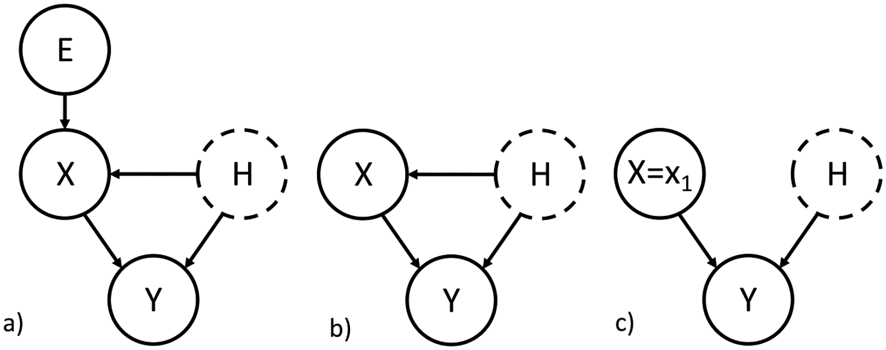

Selected Research Projects
My research lies at the intersection of causal inference, machine learning, and biomedical data science, with a focus on developing reliable inference and prediction methods under complex biological systems.
1. Causal Inference with Hidden Confounding
This project studies how to estimate causal effects when important confounders are unobserved. Hidden confounding is a major challenge in observational studies because standard regression adjustment may produce biased effect estimates when relevant variables are missing. This is important for regulatory network inference, because many observational data only contains partial observations of the whole network.
My work leverage instrumental variables and data collecting environments to recover causal information in the presence of latent confounding. This includes frameworks related to invariant estimation and approaches that combine information from multiple sources of variation.

2. Evaluation of Perturbation Prediction Models
This project examines how to properly evaluate in-silico models for cellular perturbation experiments. In many studies, common metrics such as correlation or mean squared error may not align well with the actual biological goal of identifying differentially expressed genes.
I studied the use of AUPRC as a biologically relevant evaluation metric for perturbation predictions. This work highlights that a model can appear accurate under standard numerical metrics while still failing to recover the most important biological signal.

3. Stable Predictive Set
This project focuses on prediction under contextual heterogeneity and concept shift. When the target environment differs from the training environment, predictors that appear useful in one setting may fail to generalize to another.
I develop a framework for selecting predictors that are stable across environments, with the goal of improving model transportability and robustness in out-of-distribution prediction. The approach is especially motivated by biomedical settings where only partial observations are available in the target context.